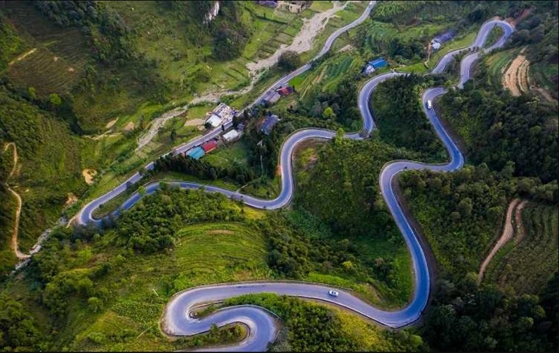

Trải Nghiệm Địa Phương
Đi Bụi Cùng Cheap
Địa điểm du lịch Cao Bằng bạn nhất định phải check-in một lần
TNhắc đến Cao Bằng, các tín đồ xê dịch sẽ nghĩ ngay đến vùng đất phía Bắc với thiên nhiên hùng vỹ giữ trọn nét nguyên sơ cùng khí hậu mát mẻ suốt 4 mùa trong năm. Ngoài ra, Bao Bằng còn nổi tiếng với nhiều khu rừng nguyên sinh và hệ thống sông suối dày đặc. Điều này đã góp phần đưa nơi này trở thành điểm đến yêu thích của các tín đồ xê dịch thích khám phá thiên nhiên. Nếu bạn đang có kế hoạch vi vu tọa độ này, cùng Traveloka điểm danh ngay top 8 địa điểm du lịch Cao Bằng nhất định phải check-in!
1. Thác Bản Giốc
Thác Bản Giốc từng lọt vào danh sách những thác nước đẹp nhất khu vực Đông Nam Á và cũng top 4 dòng thác lớn nhất thế giới. Nằm tại vị trí giao thoa giữa biên giới Trung Quốc và Việt Nam, Bản Giốc đẹp tựa một dải lụa trắng tinh khôi giữa núi rừng Cao Bằng và đổ xuống dòng sông Quây Sơn màu ngọc bích

2. Đèo Mã Phục
Mã Phục là con đèo đẹp nhất tỉnh Cao Bằng và là một địa điểm check in ở Cao Bằng khiến các tín đồ xê dịch ngỡ ngàng trước sự hùng vĩ của thiên nhiên. Đèo thuộc địa phận huyện Trà Lĩnh và có chiều dài Khoảng 3,5 km cùng độ cao 700m (so với mực nước biển). Đúng như tên gọi, đèo Mã Phục “vắt” ngang ngọn núi đá vôi và thung lũng tạo nên hình ảnh tương tự con ngựa..
3. Hồ Thang Hen
Cùng thuộc địa phận huyện Trà Lĩnh, hồ Thang Hen là một trong các địa điểm du lịch Cao Bằng nổi tiếng nhất. Hồ nằm trong quần thể 36 hồ nước tự nhiên nằm ở độ cao gần 1700m và kết nối thông qua hệ thống hang động dưới lòng đất. Trong đó, hồ Thang Hen có diện tích lớn nhất và cũng thu hút nhiều tín đồ xê dịch nhất.
Hồ nước này có khung cảnh đẹp nhất nhì Bắc Bộ với dòng nước màu xanh ngọc bích phản chiếu mây trời. Xung quanh hồ là những cánh rừng nguyên sinh và thảm hoa dại nở rộ. Dù nước hồ sẽ chuyển sang sắc đục vào mùa mưa nhưng khung cảnh vẫn đẹp như một bức tranh thủy mặc giữa núi rừng Đông Bắc.
phải check-in một lần